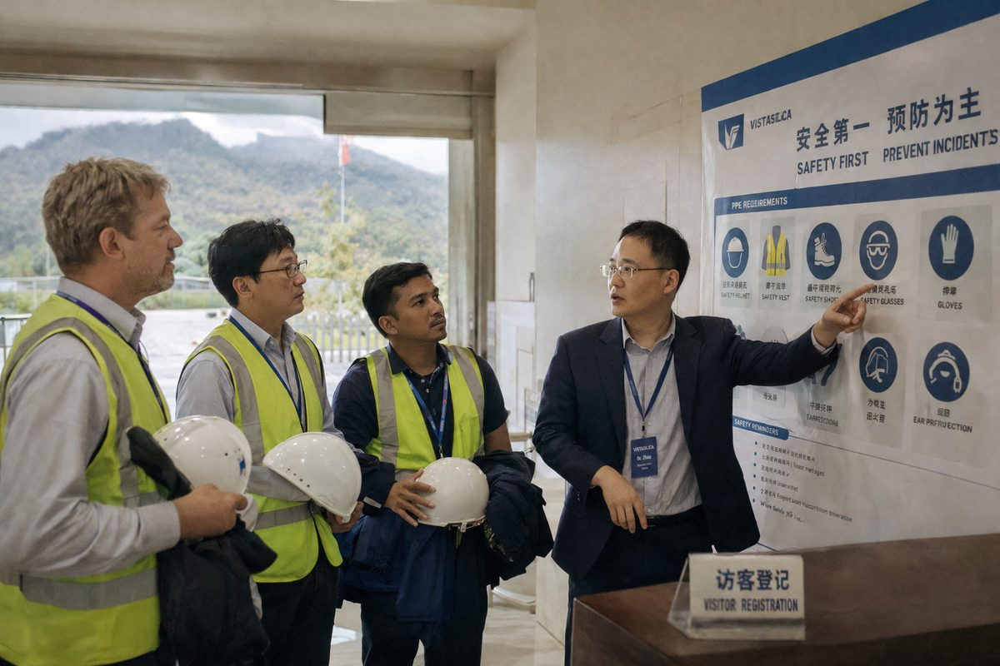
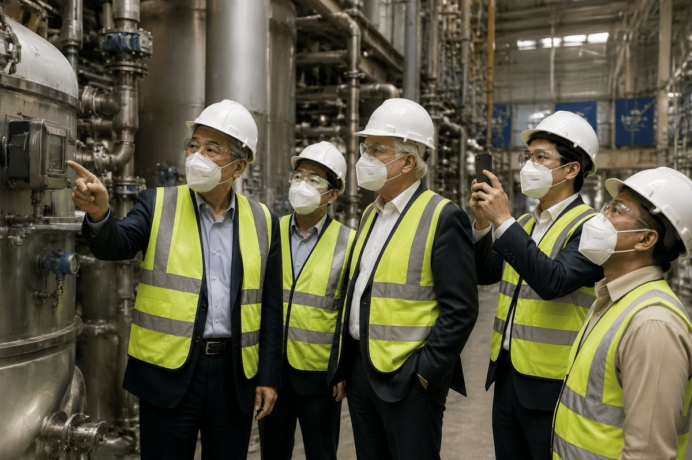

Real cooperation in a need–solution–result form, plus long-term trust built on repeat orders. Verifiable results instead of vague promises.
“We switched 18 months ago and haven't had a single silo blockage since. Your technical team came to our plant in Lower Saxony twice during the trial — that level of support is rare.” — Klaus M., Production Director, Germany
“The bleaching earth savings alone paid for the silica in the first quarter. We've since recommended VS-OE550 to two neighboring mills in the cooperative.” — Javier G., Plant Manager, Spain
“Every batch of VS-DC300 behaves the same in our oil-phase dispersion — no reformulation surprises. The blurring effect? Our sales team noticed before we told them.” — Soo-jin L., R&D Formulator, South Korea
“We export to 15 countries with very different climates. VS-FC200 is the first anti-caking agent that actually holds up across all of them.” — Budi S., Quality Assurance Manager, Indonesia
*Case studies reflect real customer engagements. Company names are withheld for confidentiality; named references available under NDA on request.
We welcome customers and partners to audit our Longyan facility — safety briefing, shop-floor walkthrough, QC laboratory and technical review. Seeing the process first-hand is the fastest way to build trust, and audits can be arranged on request.


They didn't just hand over one grade — they asked about our process first, then arranged comparison samples. After the first consolidated order, we've repeated into a third grade.Premix plant · procurement managerSoutheast Asia
Dephosphorization and bleaching-earth use are what we care about most. Their combined approach helped us work out the total cost clearly — more reliable than pure price comparison.Independent refinery · production managerMiddle East